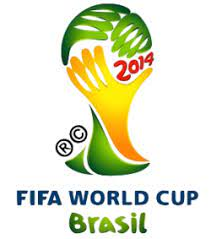
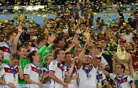

מונדיאל 2014
מארחת: ברזיל
 תקופת התחרות: 12 ביוני 2014 – 13 ביולי 2014 (4 שבועות ו־4 ימים)
מספר משתתפות: 32
הזוכה: גרמניה
מספר משחקים: 64
מלך השערים: חאמס רודריגס
השחקן המצטיין: ליונל מסי
מונדיאל 2014 הוא הטורניר ה-20 של גביע העולם בכדורגל. הטורניר נערך בברזיל בפעם השנייה בתולדותיה, לאחר שאירחה לפני כן את הטורניר ב-1950. משחק הפתיחה בין ברזיל לבין קרואטיה התקיים ב-12 ביוני 2014. במשחק הגמר, שנערך ב-13 ביולי 2014, ניצחה גרמניה את ארגנטינה בתוצאה 1–0 וזכתה בתואר בפעם הרביעית בתולדותיה. זה היה המונדיאל הראשון שבו נעשה שימוש בטכנולוגיית קו השער.
המדינה המארחת

ברזיל נבחרה לארח את המונדיאל ב-30 באוקטובר 2007, לאחר שהוחלט כי הטורניר ייערך בדרום אמריקה, וברזיל הייתה המדינה היחידה שהגישה מועמדות. זהו הטורניר הראשון שנערך בדרום אמריקה מאז מונדיאל 1978 שנערך בארגנטינה השכנה. כל המדינות הדרום-אמריקאיות שאירחו את המונדיאל (אורוגוואי, צ'ילה וארגנטינה) עשו זאת רק פעם אחת עד כה. ברזיל היא המדינה החמישית שאירחה שני טורנירים. בכך היא הצטרפה למקסיקו, איטליה, צרפת וגרמניה.
גמר המונדיאל
גמר מונדיאל 2014 התקיים באצטדיון המרקנה בריו דה ז'ניירו שבברזיל ב-13 ביולי 2014, ובו נקבע שזוכת גביע העולם לשנת 2014 היא נבחרת גרמניה שניצחה את נבחרת ארגנטינה 0-1. גרמניה ניצחה בזכות שער בהארכה של מריו גצה וזכתה בפעם הרביעית בגביע העולם, ולראשונה מאז איחודה. זכייה זו היא הזכייה הראשונה של נבחרת אירופאית על אדמת יבשת דרום אמריקה.
משחק זה היה המפגש השלישי של גרמניה וארגנטינה בגמר גביע העולם, לאחר שנפגשו בגמר מונדיאל 1986 ובגמר מונדיאל 1990. לפני טורניר זה נבחרת גרמניה הגיעה לגמר המונדיאל 7 פעמים (6 פעמים כמערב גרמניה), זכתה 3 פעמים (1954, 1974 ו-1990) והפסידה 4 פעמים (1966, 1982, 1986 ו-2002). מנגד, נבחרת ארגנטינה הגיע לגמר המונדיאל 4 פעמים, זכתה פעמיים (1978 ו-1986) והפסידה פעמיים (1930 ו-1990).